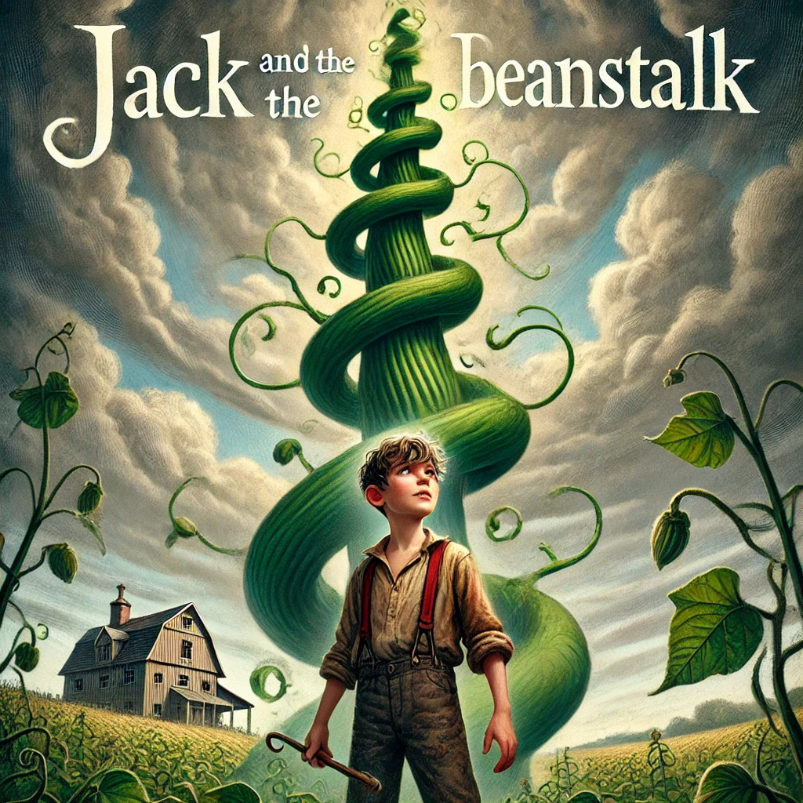
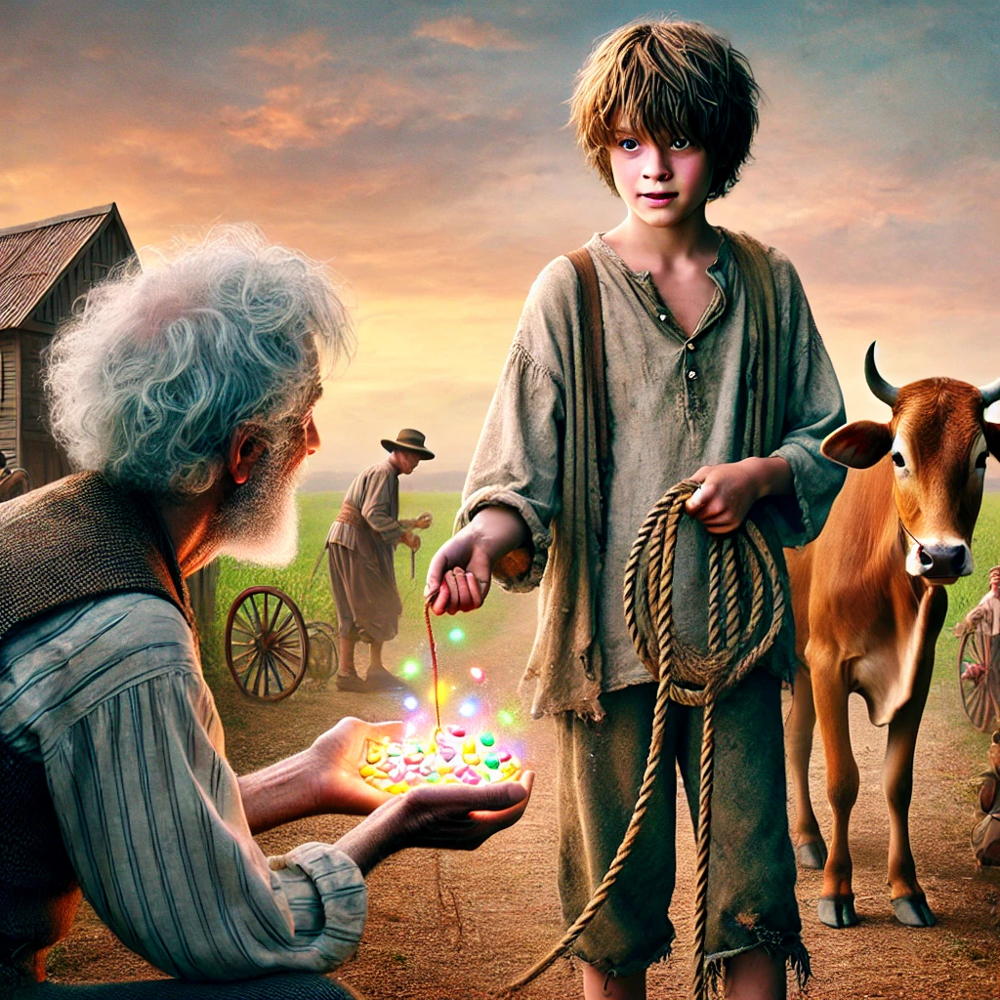
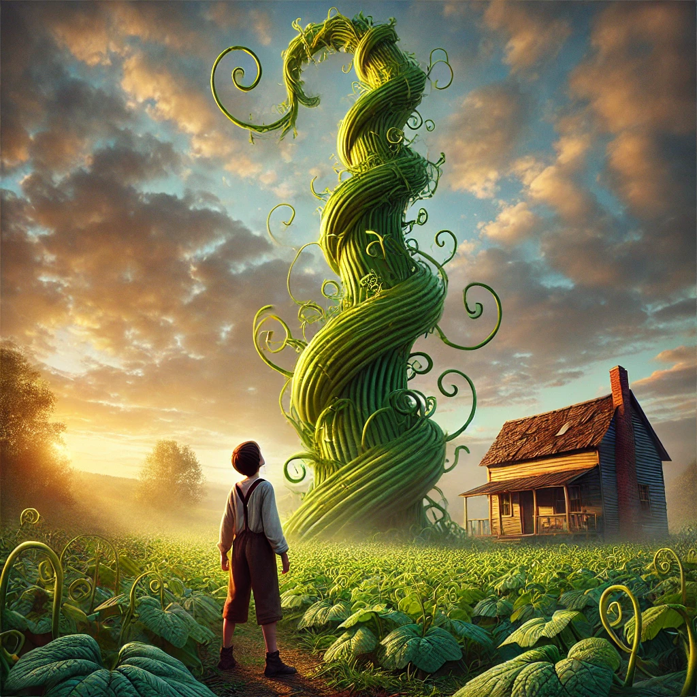
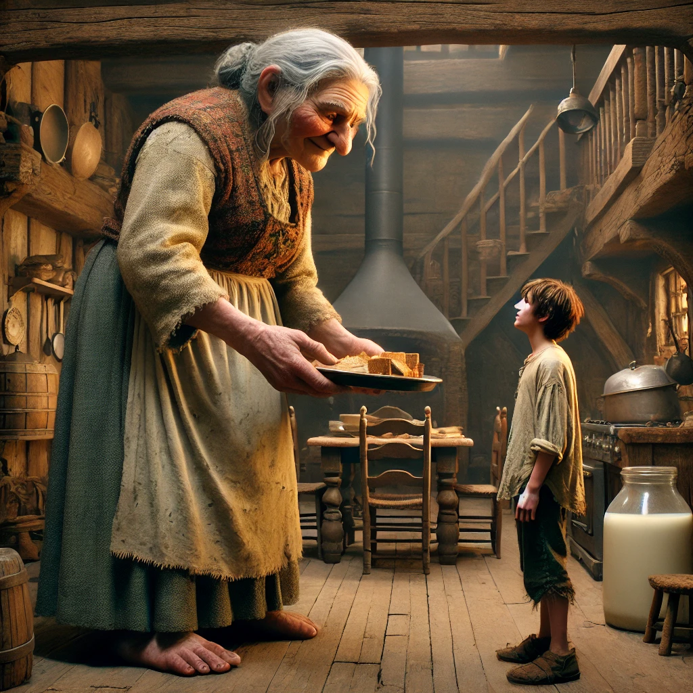

This example inserts dynamic action triggers into a block of text represented by orange dots. The listener follows along and triggers any action it passes. The orange underline is the target word currently being listened for and previously heard words are greyed out. Once you finish the full text, it will reset to the beginning.
[img:jack-00.webp] Jack, [img:jack-01.webp] a poor country boy, trades the family cow for a handful of magic beans,
which grow into a [img:jack-02.webp] massive, towering beanstalk reaching up into the clouds.
Jack [img:jack-03.webp] climbs the beanstalk and finds himself near a [img:jack-04.webp] castle of an unfriendly giant.
Jack goes [img:jack-05.webp] inside the castle and finds the giant’s wife in the kitchen.
The end.



